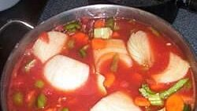

Cabbage Fat-Burning Soup

Description
This tomato and cabbage soup was rumored, in days of old, to melt away those thighs.
Ingredients
5 carrots, chopped
3 onions, chopped
2 cans whole peeled tomatoes, with liquid
1 envelope dry onion soup mix
1 can cut green beans, drained
2 quarts tomatoe juice
2 green bell peppers, diced
10 stalks celery, chopped
1 can beef broth
Steps
- Place carrots, onions, tomatoes, cabbage, green beans, peppers, and celery in a large pot.
- Add onion soup mix, tomato juice, beef broth, and enough water to cover vegetables.
- Simmer until vegetables are tender. May be stored in the refrigerator for several days.
Source: All Recipies